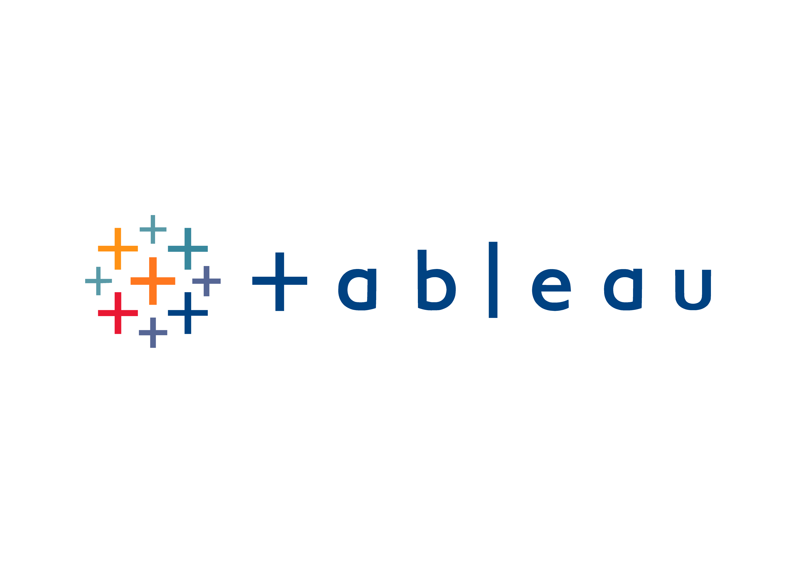

Tech Layoffs Analysis with MySQL
In this project, we utilize MySQL for data cleaning and exploratory
data analysis to delve into recent
layoffs within the top tech firms.
Through this analysis, we aim to uncover insights into the trends
and
implications of these layoffs amidst ongoing economic challenges in the tech sector.

Covid 19
Data Exploration

This project explores COVID-19 data using SQL queries, analyzing total cases, deaths, and vaccination progress. It aims to provide insights into the pandemic's impact globally, using SQL skills like joins and aggregate functions for data analysis.

This Tableau dashboard visualizes British Airways reviews, offering insights into customer feedback, satisfaction levels, and key trends.
Predicting Employee Attrition with Python

This project uses machine learning to predict employee attrition by analyzing historical data. It aims to identify factors contributing to attrition and provide actionable insights for organizations to improve retention strategies.
AMAZON WEB SCRAPER
WITH PYTHON
Amazon Web Scraper is a Python script designed to extract product information from Amazon's web pages. It collects data such as product titles and prices, storing them in a CSV file for analysis.